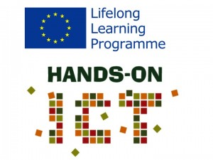
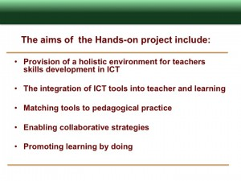

Interested in brushing up your skills in learning design, ICT for
teaching and learning and creativity techniques?
We are looking for educators to participate in a free, open and online course (MOOC) that will help you reign your Learning with ICTs and Creativity
In the context of the HANDSON project (http://handsonict.eu/), we are offering a course for teachers in Higher Education, Vocational Education Training and Secondary Schools. It is a 5-weeks MOOC about Designing Learning with the use of digital tools and creativity techniques.
The features of the course are:
-
An emphasis on collaborative working in small groups bringingtogethereducators with wide and diverse backgrounds from around the world;
-
A focus on the Learning Design Studio (LDS) approach, a design process to help educators design courses and learning activities.
-
Facilitators with expertise in Online Learning, Creativity and the Learning Design Studio who will work with the pilot teachers to explore the potential of this learning method to introduce ICT in the teaching and learning processes.
-
The opportunity to observe, practice and learn about methods for peer review and peer mentoring.
-
The creation of practical artefacts that can be reused by the participants in their actual classrooms.
The main language of the course will be English: the learning materials and the communication with the facilitators will be in English. However teamwork can happen in any other language.
Start Date: 19/05/2014
End Date: 20/06/2014
Duration: 5 weeks
Expected dedication time: 2 to 6 hours / week
Educators who join this second pilot are not expected to have any particular expertise in online learning. We are looking for educators or teacher trainers from secondary education, vocational education or higher education.
How to join this course: Go to http://riga.uoc.es/moodle/and register to the Design Studio course. More information on: http://handsonict.eu/
Notes about the HANDSON project and environment
The Hands-On ICT is a project funded by the Lifelong Learning Programme. The project team has been exploring the value of Massive Online Open Courses (MOOCs) and Community Online Open Courses (COOCs) for the continuous professional development of educators. The aim is to create a holistic environment that provides teachers from higher education, vocational education and schools with everything they need to learn about making the right choice of digital tools for a given pedagogical activity.

This project has been funded with support from the Lifelong Learning Programme of the European Commission.
This site reflects only the views of the authors, and the European Commission cannot be held responsible for any use which may be made of the information contained therein.
More notes about HandsOn ICT
The HandsOnICT blog
{kind=link}
The MirandaNet team maintain and manage the HandsonICT blog where all the project news and progress can be found. Read more
The MirandaNet/HandsOnICT partnership
The MirandaNet Fellowship is delighted to be partners in this project funded by the EU Lifelong Learning Programme. The other partners are in Catalonia, Greece, Slovenia and The Netherlands
During the lifetime of this project MirandaNet Fellows are running a series of events that are underpinned by our strategies for dissemination and the sustaining of the community of educators in teacher education, vocational education and schools after the project. The MirandaNet/HandsOn aims are:
- to encourage teachers to join the MOOC pilot;
- to select some teachers to become mentors;
- to develop a community of educators who are keen to share their new knowledge about the use of MOOCs in education;
- build a community of educators that will continue to use and grow the MOOC population after the end of the pilot.
{kind=link}
Looking at MOOCs
28th May 2013 London, UK
In this first event we tackled some of the biggest questions about MOOCs in education in order to define the field.
{kind=link}
Some questions we tackled in this workshop were:
What are the outcomes we seek for learners in a 21st Century social, economic and technological context?
Skills, competences and attitudes (personal, creativity, knowledge…)?
What are the value systems for learning institutions?
How can we create a framework for education to become evidence based?
How do we balance the evaluation of educational technology contexts in pedagogical, social and economic aspects of learning?
How do we build the system wide knowledge base for transformation?
How do we build the learning competences of professionals to design, deliver and enhance the systems of learning, based on evidence?
Where does creativity fit into teaching ICT?
How much should teachers know about ICT?
Does ICT develop students for the workplace?
What is will a 21st Century MOOC look like?
You can read more about the workshop programme, key ideas, suggestions from the working groups and agreed actions here.
{kind=link}
Considering creativity and creative thinking skills
9th July 2013 Bedford, UK
In this event MirandaNet Fellows ran a day’s workshop with the professional organisation, Initial Teaching in Information Technology (ITTE), The British Computer Society, Naace and Computing at School(CAS).
Aims: to understand more about how the principles of teaching and learning creatively can be applied to mastering the effective use of digital technologies across the curriculum at these levels:
- higher education with a particular emphasis on teacher education
- vocational education
- primary and secondary education
{kind=link}
Summary
This workshop follows on from a workshop in London on May 28th that explored a key element in the HandsOn project: the value of MOOCs in education. The day was held as an element of the ITTE conference in order to keep the meeting costs as low as possible.
In this all day workshop the expert participants who all use digital technologies in teaching and learning looked at the connection between creativity and ICT in general concluding with investigating closely how learning about digital technologies in teaching and learning can be enhanced by creative thinking techniques.
The programme began with two keynotes: the first was a general address about the need to reconceptualise technology in order to enhance teaching and learning. The second keynote was an introduction to the main principle of the EU funded HandsOn project. These keynotes were followed by three symposia on topics related to creativity in teaching and learning, creative practice in ICT and the need for creativity in teaching ICT. Finally a MirandaMod was staged that aimed to draw together on a digital map some key ideas about the different ways in which creativity can be used on the teaching of ICT. The MirandaMod at the end of the day provided the participants with an opportunity to understand other points of view and build new knowledge.
Read more here
MirandaMod digital maps
The participants in the MirandaMod developed a digital map of their shared knowledge using a process suggested by Edward De Bono’s Three Hats creative thinking approach to collaborative learning. The details developed in the Thinking Hats workshop can be found here.
After the workshop participants were inspired to develop a further digital map called Creativity with ICT and Computing in Education, can be found here.
How can a MOOC enable collaborative knowledge creation and, promote learning by doing?
25th September, Barcelona.
(This event is currently being organised)
What are MirandaMods?
The HandsOn event programme includes a MirandaMod which is
Participating in a MirandaMod
Many organisations now use follow the MirandaMod principles of knowledge building in order to share and store collaborative professional ideas. There is an article about this approach here.
What is a community of practice?
The MirandaNet Fellowship, established in 1992 was one of the first ‘communities of practice’ where members share ideas and help each other, often on-line. In these three decades they have developed a number of techniques to help other professional groups create and sustain their community. Read more…